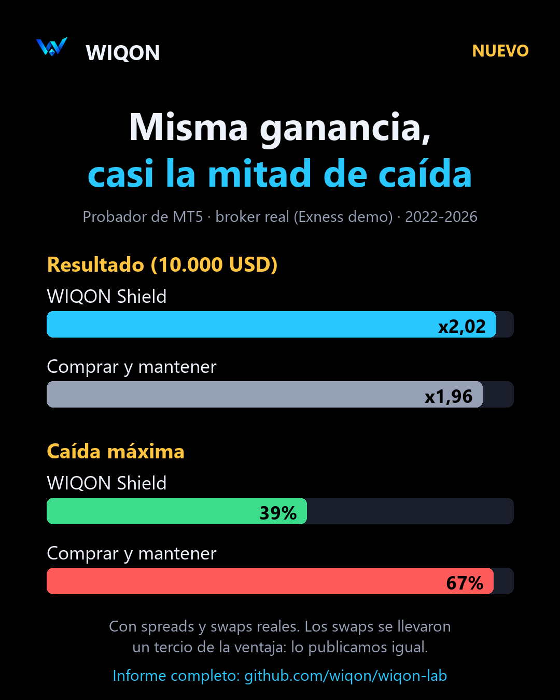

El guaraní frente al dólar
Referencia oficial del BCP hoy: —.
¿Por qué importa? Define el precio de los importados, el peso de las deudas en dólares y la competitividad de lo que Paraguay vende afuera.
Noticias, datos y contexto para seguir mercados, trading y activos digitales, mirados desde la frontera entre Paraguay y Brasil. Sin señales de compra, sin promesas: con fuentes.
Cargando…
Negocios, mercados, fintech y criptoactivos. Primero Paraguay, después Brasil y el resto de Hispanoamérica. Cada nota enlaza a su fuente original.
Solo cotizaciones de instituciones oficiales, con su fecha. No son precios de casas de cambio.
| Moneda | Valor | Institución | Fecha |
|---|---|---|---|
| Cargando… | |||
En la frontera, el real importa tanto como el dólar. El comercio de Ciudad del Este se mueve con la cotización del real, y los precios de importados con la del dólar.
Las casas de cambio y los bancos aplican su propio precio de compra y venta: usá esta tabla como referencia, no como precio de operación.
No son señales: es lo que miramos todos los días y por qué.
Referencia oficial del BCP hoy: —.
¿Por qué importa? Define el precio de los importados, el peso de las deudas en dólares y la competitividad de lo que Paraguay vende afuera.
Hoy: —.
¿Por qué importa? Cuando el real se fortalece, el comercio de Ciudad del Este gana compradores brasileños; cuando se debilita, ocurre lo contrario.
En Paraguay, la RG DNIT N.º 47/2026 pide informar operaciones con criptoactivos. En Brasil, las resoluciones BCB 519, 520 y 521 rigen desde el 1/10/2026.
¿Por qué importa? Las reglas definen qué plataformas pueden operar y qué tiene que declarar cada persona.
Cierre diario frente a su media de 100 días: —.
¿Por qué importa? Es la regla que investigamos y operamos. Nos dice si el mercado está en tendencia, no adónde va el precio.
USDT y USDC se usan cada vez más para ahorrar y enviar dinero. En Brasil, la Resolución BCB 521 incluye ciertas operaciones con activos virtuales en el mercado de cambio.
¿Por qué importa? Cambian cómo se mueven los dólares entre países y qué controles se aplican.
Seguimos las decisiones de tasas del Banco Central del Paraguay y del Copom en Brasil, y su efecto en el crédito y en el tipo de cambio.
¿Por qué importa? Con tasas altas, ahorrar rinde más y endeudarse cuesta más; eso también mueve las monedas.
La Resolución General DNIT N.º 47/2026 obliga a presentar una Declaración Jurada Informativa de Criptoactivos a las plataformas que operan en el país y a las personas y empresas residentes que superen US$ 5.000 al año en operaciones, con o sin intermediarios. Se presenta por el sistema Marangatu.
Equipo WIQON · 07/10/2026 · Fuente: DNIT · Foto: P. S. F. Freitas, CC BY-SA 4.0
Las resoluciones BCB 519, 520 y 521 rigen desde el 1 de octubre de 2026; el envío de datos de supervisión empieza el 1 de enero de 2027.
Probamos nuestro EA con los costos reales de un broker: ganó US$ 14.475 por precio y pagó US$ 4.241 en swaps. Casi un tercio de la ganancia se fue en financiación.
Laboratorio WIQON · informe y datos
Una estrategia de day trade que parecía ganadora le ganó a dejar el dinero en Earn en solo uno de seis semestres. Con pocas operaciones, "la mejor" suele ser suerte.
Laboratorio WIQON · ver el experimento
Probamos ideas de trading populares con años de datos y costos reales. La mayoría no pasa. Publicamos todo, con el código para repetirlo.
| Hipótesis | Tipo | Resultado | Veredicto |
|---|---|---|---|
| Filtro de tendencia en BTC (media 100) | HISTÓRICO | 56,6% anual vs 37,3% de mantener; caída 34,7% vs 76,6% (2018-2026, con comisiones) | Sobrevive |
| La misma regla en MT5 (CFD) | HISTÓRICO | x2,02 vs x1,96; caída 39% vs 67%. Los swaps se llevan un tercio | Con reservas |
| Day trade EMA21 Bounce | HISTÓRICO | +0,71% en 3 años vs +9,3% en Earn; media por operación indistinguible de cero | No |
| Rotación de altcoins | HISTÓRICO | 33,7% anual con monedas de hoy; 1,0% con las que existían en 2021 | No (sesgo) |
| Arbitraje entre 6 exchanges | MEDICIÓN | 69 oportunidades en 24 h; casi ninguna real | No |
| Funding carry | HISTÓRICO | 7-10% anual promedio, casi todo de 2021; 2-3% en 2025-26 | No |
Un Expert Advisor para MetaTrader 5 que aplica la regla de tendencia que sobrevivió a nuestras pruebas: mantiene la posición en BTC mientras la tendencia sigue y la cierra cuando se rompe. Su objetivo es limitar las caídas grandes, no ganar más.

Cada experimento explicado en pocos minutos, en nuestro canal de YouTube.
Servicios técnicos de software y datos, con la misma metodología del laboratorio. No gestionamos dinero de terceros.
Backtest de portafolio con costos reales, validación fuera de muestra e intervalos de confianza. Te decimos si tiene ventaja, o si no.
Órdenes protegidas, Earn automático, alertas por Telegram y despliegue 24/7 en tu Raspberry Pi o VPS.
Paneles con tus datos y clases de Python aplicado a mercados.
Gráficos e indicadores. Con nuestro enlace recibís un cupón de USD 15 para tu próximo plan.
Donde operamos la estrategia en vivo y de donde salen los datos de precios de esta página.
La plataforma donde corre WIQON Shield. Gratuita.
Todo nuestro código y resultados, abiertos.
Transparencia: los enlaces marcados como afiliado o referido nos dan una comisión si te registrás o suscribís, sin costo extra para vos. No cambian lo que publicamos.
WIQON nace en la frontera entre Paraguay y Brasil, donde el guaraní, el real y el dólar conviven todos los días. Investigamos mercados y estrategias de trading con datos reales y publicamos lo que encontramos, también cuando el resultado es malo.
No vendemos señales ni administramos dinero. Ofrecemos información con fuentes, investigación abierta, software y servicios técnicos.
No. Publicamos información e investigación, y ofrecemos software y servicios técnicos.
Cada 30 minutos, a partir de RSS públicos de cada medio o institución. Si una fuente no responde, mostramos sus últimas noticias con la hora real.
Del Banco Central del Paraguay, el Banco Central do Brasil (PTAX), el BCRA y la Superfinanciera de Colombia (TRM), con la fecha que publica cada uno.
No. Es información y análisis educativo. Operar en mercados implica riesgo de pérdida.